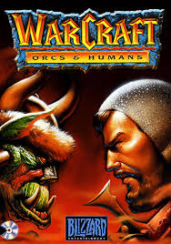

Su historia
Blizzard Entertainment, Inc. es una empresa desarrolladora y distribuidora de videojuegos estadounidense con sede en Irvine, California y fundada el 1 de febrero de 1994. Conocida y fundada originalmente como Silicon & Synapse en 1991, en 1994 la compañía se renombró Blizzard Entertainment, Inc., su nombre actual, y poco después lanzó su primer gran éxito comercial, Warcraft: Orcs & Humans. Desde entonces, Blizzard ha logrado cosechar un gran éxito con las sagas Warcraft, Diablo y StarCraft, así como el MMORPG World of Warcraft, convirtiéndose en un referente de los géneros de estrategia en tiempo real y MMORPG.
Warcraft Orcs & Humans

Es de los primeros juegos del género de estrategia en tiempo real o RTS. Warcraft: Orcs & Humans inicia la serie Warcraft y ocurre en un ambiente épico medieval donde los humanos del reino mítico de Azeroth enfrentan a los orcos invasores entre otras criaturas fantásticas.
World of Warcraft

World of Warcraft (abreviado como WoW) es un videojuego de rol multijugador masivo en línea desarrollado por Blizzard Entertainment. Es el cuarto juego lanzado establecido en el universo fantástico de Warcraft, el cual fue introducido por primera vez por Warcraft: Orcs & Humans en 1994.4 World of Warcraft transcurre dentro del mundo de Azeroth, cuatro años después de los sucesos finales de la anterior entrega de Warcraft, Warcraft III: The Frozen Throne. Fue anunciado el 2 de septiembre de 2001.
Battle for Azeroth

World of Warcraft: Battle for Azeroth es una expansión del videojuego multijugador masivo en línea (MMORPG) World of Warcraft, siguiendo a los acontecimientos de Legión. Se anunció en la BlizzCon del año 2017 el 3 de noviembre de 2017. Estuvo disponible para preordenar desde el 30 de enero de 2018, y se lanzó al mercado el 14 de agosto del año 2018.
Conoce lo que ofrece esta expansion